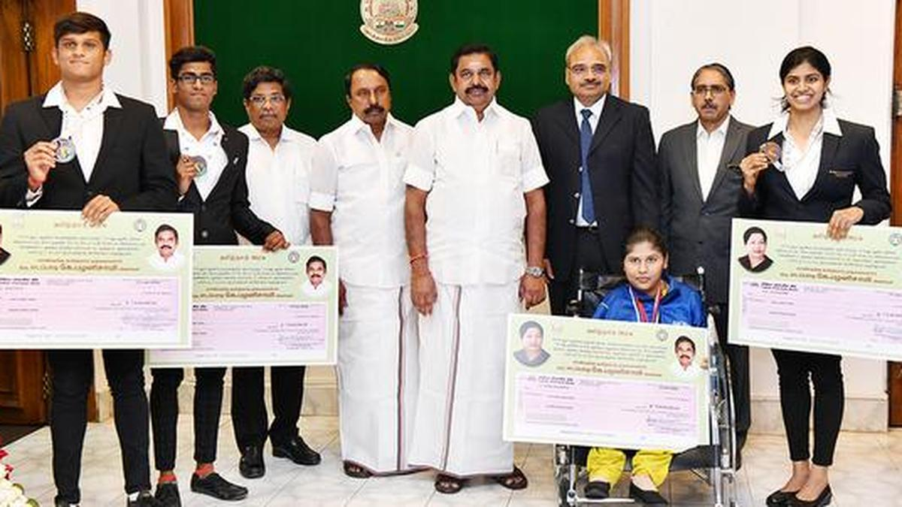
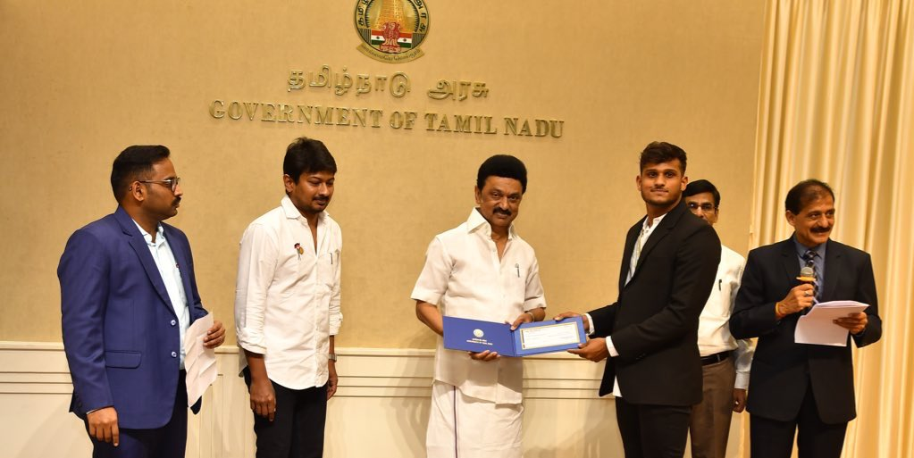
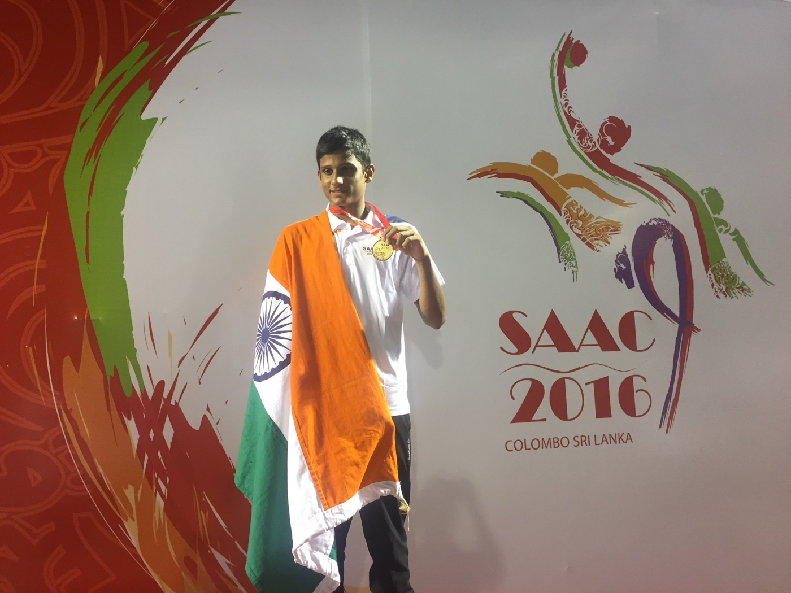
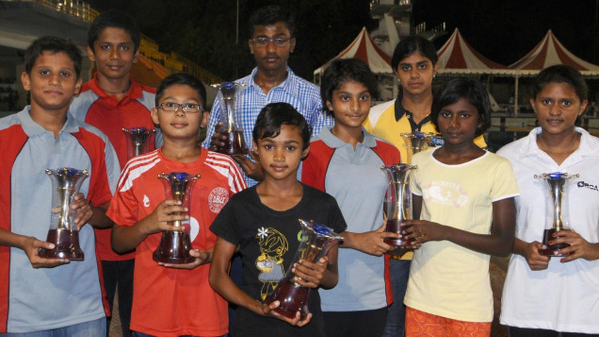
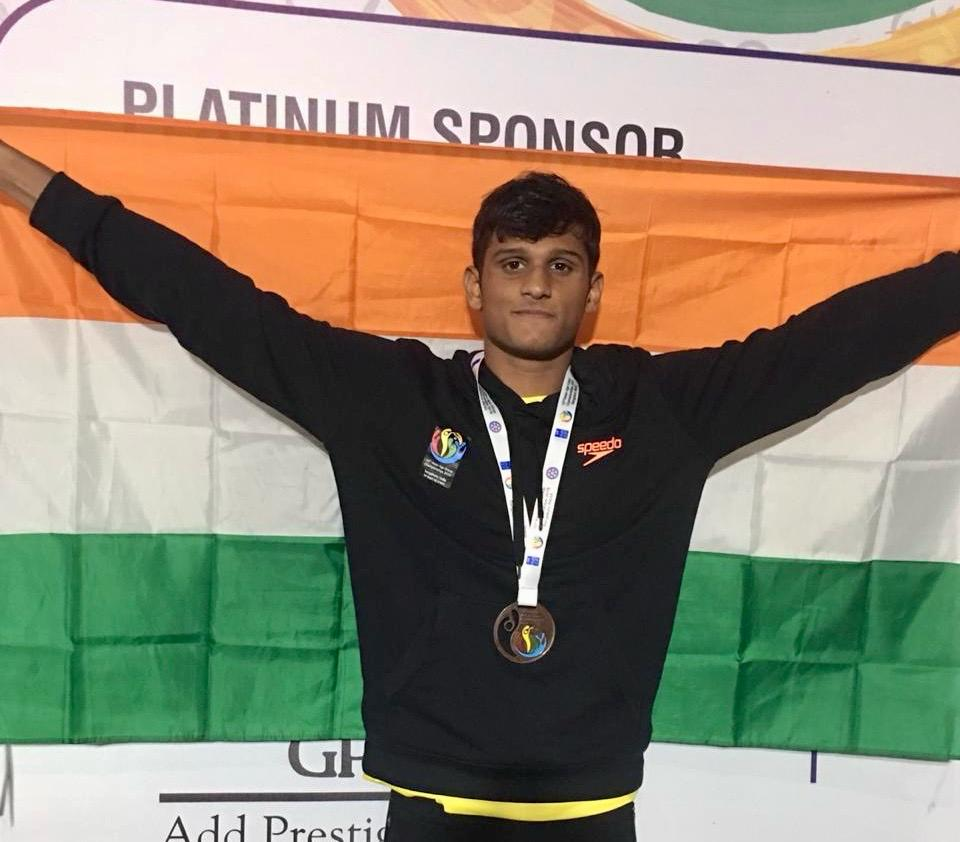
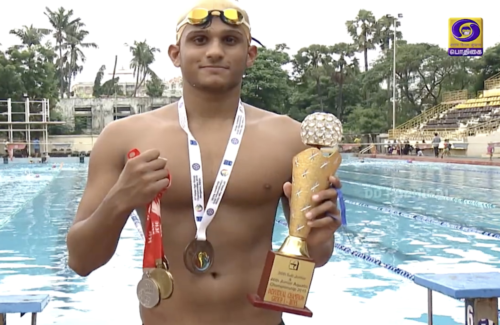
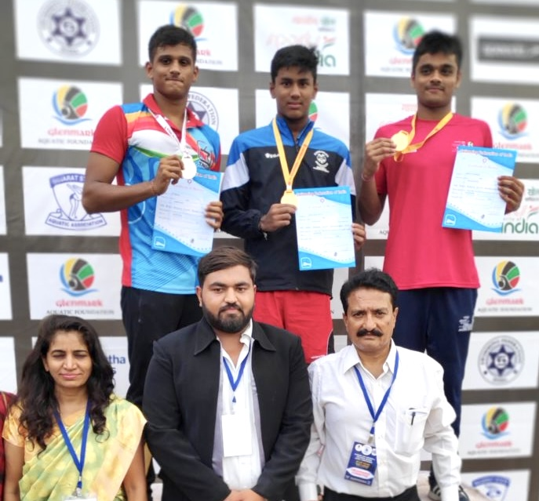

Asian medallist felicitated by the chief minister of Tamil Nadu
Honorary feature standing next to the chief minister of Tamil Nadu, Thiru. Edapadi K. Palaniswami
Read Article ↗A collection of articles documenting my journey through swimming.

Honorary feature standing next to the chief minister of Tamil Nadu, Thiru. Edapadi K. Palaniswami
Read Article ↗
Adhithya felicitated by the Chief Minister of Tamil Nadu, Thiru M. K. Stalin, along with Sports Minister Thiru. Udhayanidhi Stalin.
Read Article ↗
A record-breaking performance at the TNSAA 36th Sub-Junior and 46th Junior Aquatic Championship.
Read Article ↗
Adhithya D is adamant about making winning a habit.
Read Article ↗
A feature exploring the discipline and commitment behind my swimming career.
Read Article ↗
One of the earliest newspaper reports covering my competitive journey.
Read Article ↗
Balancing academics with competitive sport at the national level.
Read Article ↗
Live telecast on DD Podhigai, the Tamil Nadu state channel of Doordarshan, covering my journey as an international swimmer.
Watch Video ↗
D Adithya of Tamil Nadu won bronze with a time of 00:26.11
Read Article ↗
Article aout me topping tamil Nadu sports quota list
Read Article ↗
Nithik Nathella, Danush Suresh, B Benedicton Rohit, and Adhithya Dinesh created a National Meet Record for Tamil Nadu by clocking 3:45.66 in the Men’s 4 x 100m Medley relay on third day of the 77th Senior National Aquatic Championships 2024.
Read Article ↗
TSPA’s D Adhithya was the only record breaker on Day 1 of the 33rd sub-junior and 43rd junior state aquatic championship being held at the Velachery Aquatic Complex here.
Read Article ↗
Recovering from a spinal cord fracture is not an easy feat. But if you have the willpower, you can get well soon and go on to even win medals in your chosen sport.
Read Article ↗D Adhithya sets a new meet record to clinch a gold
Read Article ↗